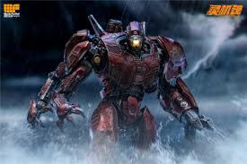
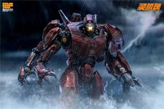

Sobre o Crimson Typhoon
O Crimson Typhoon é um jaeger Mark-IV Chinês, um dos mais icônicos e bem-sucedidos robôs de combate já construídos para enfrentar os Kaijus - criaturas monstruosas que emergem do Oceano Pacífico através de um portal interdimensional.
O Crimson Typhoon foi lançado em 22 de agosto de 2018. Foi construído na base do Shatterdome de Hong Kong.,projetado para ser mais versátil do que os modelos anteriores, combinando poder de fogo impressionante com mobilidade superior.
Pilotado pelos irmão Wei Tang, o Crimson Typhoon tornou-se lendário pela técnica thunder cloud.
Especificações Técnicas
Modelo
Mark-IV
Altura
76 metros
Peso
1.722 toneladas
Armamento Primário
Cerras Nas Mãos
Armamento Secundário
Sistema De 3 Braços
Velocidade
9/10
Força
7/10
Resistência
5/10
Galeria
 

História de Combate
O Crimson Typhoon entrou em serviço em 2018 e rapidamente estabeleceu-se como um dos Jaegers mais eficientes do Programa Pan-Pacífico de Defesa.
Entre suas vitórias mais notáveis estão:
- "Operação Tempestade Vermelha" (2020): Eliminou Onibaba (Classe III) em Xangai usando seus 3 braços para esmagar o Kaiju.
- Batalha do Estreito" (2023): Matou Kuma (Classe IV) nas Filipinas em 2 minutos, desmembrando-o com as Serras Rotativas."
- Batalha em Hong Kong (vs. Otachi & Leatherback)
Se não fosse pelo EMP, o Crimson provavelmente teria decapitado Otachi com suas serras. Seu design influenciou o Bracer Phoenix (Mark-5), mas sem a mesma agilidade.